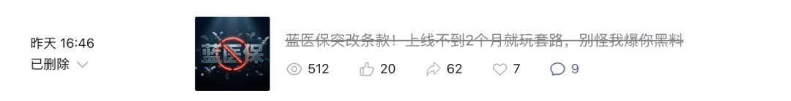

关于「太平洋健康要求我删除文章」这件事，我有话说
昨天，针对蓝医保昨天发布的条款变动，我写了一篇文章。
也就是发文后大概三个小时，太平洋健康（太保健康）通过中介渠道找到了我。
核心诉求就一个：删文。
现在大家去翻我的历史记录，文章确实已经删了。

但我删文，不是因为我心虚，而是对方给出了一个理由：这是监管的要求。
作为一个保险从业者，我对监管保持绝对的敬畏。 但对于太保健康这家公司，以及这次的处理方式，我有话不吐不快。
01 | 我为什么要写那篇文章？
昨天之所以反应那么大，甚至用词激烈，不是为了博眼球。 而是基于我的专业判断，那个条款变动背后，藏着一个巨大的 深坑。
太保健康把 蓝医保·好医好药pro版 的癌症特药责任，从 20年保证续保 改成了 1年期不保证续保。 且费率没降。
这不仅仅是减量不减价那么简单。 我敏锐地捕捉到了一个致命的风险闭环：
-
它的特药责任变成了1年期，保司可以随时拒保。
-
它的外购药条款里，明确把靶向药和免疫药排除在外。
这意味着如果用户不幸确诊癌症，第一年用了几十万的特药。 第二年，保司就可能因为担心理赔金额过高，合法合规地停掉了你的特药附加险。
等用户想回头再用主险里的外购药责任报销时，又发现合同白纸黑字写着：不赔靶免药物。
于是，用户的救命钱，彻底断了。 这就是我当时愤怒的原因。 我认为把这样的产品卖给毫不知情的消费者，是不负责任的。 我必须把这个风险点，揉碎了讲给我的客户听。
关注我，看更深度的分析丨咨询&投保微信 stiller820
02 | 删文这事的过程
文章发出后，我也没想到反响会这么大。 然后，太保健康的公关来了。
总共两轮沟通。 第一轮，是赤裸裸的施压。 没有任何解释，没有沟通条款细节，就是通过渠道方强硬要求：立刻删除。 说实话，我很生气。 我的文章是基于保司公开的公告、公开的条款进行的合理推测。
我不接受只为了保全某家大公司的面子，就牺牲我的言论自由。而且，网上写这事得那么多，不能因为只是我写的最专业、最深度，就来找我的麻烦。
第二轮，对方终于给了解释。 他们说，这次调整是因为 监管的要求。 而且这个调整不是针对太保一家，是全行业、所有做长期医疗险的保险公司都要面临的整改。
这个理由，我听进去了。 虽然我内心存疑： 监管为什么要限制大公司提供长期稳定的特药保障？ 保险的初衷不就是为了通过大数法则、通过规模效应来解决这种极端风险吗？ 如果保险公司都不敢承保花费最高的特药风险，那商业医疗险存在的意义要打个折扣。
但毕竟涉及到监管，我选择尊重。 如果这真是不可抗力的行业规则，那我承认，我昨天单纯指责太保健康玩套路是有失偏颇的。 为此，我愿意配合删除了文章。
03 | 话别说太早，我会盯着你
删文归删文，但我把话放在这里。 我对这个 监管要求 的说法，保留验证的权利。
我有三个观点要摆在桌面上：
第一，我会盯着同行。
既然说是全行业的监管要求。 那接下来，我会密切关注人保金医保、平安长相安等产品的动向，以及太保自家的蓝医保的其他版本。 如果在接下来的日子里，别家公司的长期医疗险的特药责任依然能写进主险、保证续保； 那就证明，监管要求只是太保健康为了让我删文而编造的一面之词。 如果是那样，我会不遗余力地把这件事重新翻出来，新账旧账一起算。
第二，这事办得太差。
作为一家应该给用户提供安心的大公司，太保健康这次的操作评分不及格。 产品要调整，可以发公告解释，可以安抚用户。 而不是看到负面舆论，第一时间想到的就是通过渠道施压、删帖、捂嘴。 这种傲慢的公关手段，比产品条款缩水更让人心寒。
第三，我的态度不变。
基于这次事件的观察，在事情彻底明朗之前，我依然保持对 蓝医保 系列产品的不推荐态度。 信任建立很难，崩塌只需要一瞬间。
写在最后
折腾这一出，其实挺累的。 但我更坚定了我的职业选择。
在这行混，容易被公关，容易被施压。 但总得有人站在客户这一边，把那些晦涩条款背后的坑给挖出来。 保司有强大的法务部，有庞大的公关团队。 而消费者只有我们这些爱 挑刺 的经纪人。
关于太保后续的动作，我会持续跟踪。 之前我还整理了不少蓝医保背刺老客户的案例，本来不想发的，现在看来，有必要整理整理了。
这年头买保险，不仅要防条款坑，还得防保司的套路。 如果你想要一个真实的、愿意站在你角度据理力争的保险管家。 如果你想避开那些甚至连大公司都会设下的陷阱。
可以加 赞赞的微信（stiller820）。
投保也好，理赔也罢，我会用我的专业，帮你守住最后的权益。
本文由 ShawnCH（何智翔）轉發，透過微信聊天記錄自動提取並整理。 原文連結：https://mp.weixin.qq.com/s?__biz=MzkyMTU5MjA5Ng==&mid=2247485236&idx=1&sn=801b9853ab8599e70eeabf8afeed813a&chksm=c025c1486abdd37ce3889d048eff098f01e80376df6ee796b625199f27adadbd448399b78589&mpshare=1&scene=1&srcid=0210fVZBw2tma2Tw95mFqWK7&sharer_shareinfo=c2d8af5d19196f7f877b197c1141429d&sharer_shareinfo_first=c2d8af5d19196f7f877b197c1141429d#rd